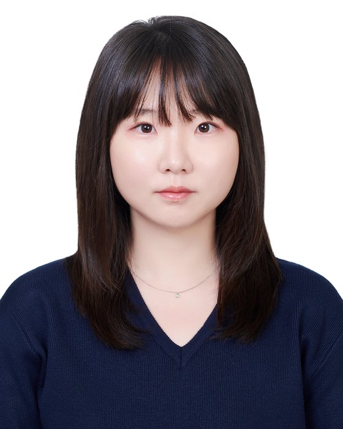

Jaehui Hwang
I am a Research Scientist in Backbone Research at NAVER AI Lab. I received my Ph.D. from Yonsei University in 2025, advised by Prof. Jong-Seok Lee at the MCML (Multimedia Computing and Machine Learning) Group, and my B.S. from Yonsei University in 2019.
My research focuses on understanding and improving the behavior of foundation models, including large language models. My recent work examines how LLMs learn to reason and how post-training shapes their behavior, including studies of on-policy distillation, reasoning traces, and the evaluation of reasoning and judgment. My broader interests include out-of-distribution generalization, robustness, and safety. During my Ph.D., I analyzed neural network vulnerabilities and how model architectures and input data shape model behavior.

News
- Oct 2026One paper accepted to WACV 2027.
- Oct 2026NP-OPD: On-Policy Distillation with Negative-Policy Rollouts is out. It introduces rollouts from a lower-capability negative policy while preserving the original distillation reward formulation.
- Aug 2026Two papers accepted to EMNLP 2026 (Main and Findings).
- Jul 2026On-Policy Delta Distillation (OPD²) is on arXiv. It uses a delta signal between the teacher and its base model to capture the changes induced by reasoning tuning.
- 2025Received my Ph.D. from Yonsei University and joined NAVER AI Lab as a Research Scientist.
Publications
Newest first · * equal contribution · † corresponding author
Experience
- Research ScientistBackbone Research, NAVER AI Lab2025 – present
- Research InternML Research, NAVER AI Lab
Advisors: Sanghyuk Chun, Dongyoon HanMar 2022 – Sep 2022
Education
- Ph.D.School of Integrated Technology, Yonsei University
Advisor: Prof. Jong-Seok Lee2019 – 2025 - B.S.School of Integrated Technology, Yonsei University
Full scholarship (IITP)2016 – 2019
Academic activities
- Award
- Merit Academic Paper Award, 2022-2 Yonsei Superior Paper Awards, Dec 2022
- Reviewer
- ICLR2025–2026NeurIPS2025–2026ICML2025–2026ACL ARR2025–2026CVPR2022–2024ICCV2023, 2025ECCV2022, 2024TMLR2023–2025
- Talks
- “Just One Moment: Structural Vulnerability of Deep Action Recognition against One Frame Attack,” Korean Conference on Computer Vision (KCCV), 2022